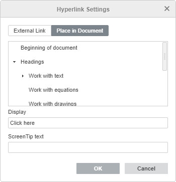

Dodavanje hiperveza
Da biste dodali hipervezu u Document Editor,
- postavite kursor na tekst koji želite da bude prikazan kao hiperveza,
- prebacite se na karticu Umetni ili Reference na vrhu trake sa alatkama,
- kliknite na ikonu Hiperveza na vrhu trake sa alatkama,
- Nakon toga će se otvoriti prozor Podešavanja hiperveze, gde ćete moći da podesite parametre hiperveze:
-
Izaberite tip veze koji želite da umetnete:
Koristite opciju Eksterna veza i unesite URL u formatu http://www.example.com u polje Poveži sa ako želite da dodate hipervezu koja vodi ka eksternom sajtu. Ako želite da dodate hipervezu ka lokalnom fajlu, unesite URL u formatu file://putanja/Document.docx (za Windows) ili file:///putanja/Document.docx (za macOS i Linux) u polje Poveži sa.
Hiperveze u formatu file://putanja/Document.docx ili file:///putanja/Document.docx mogu se otvoriti samo u desktop verziji editora. U web editoru možete samo dodati vezu bez mogućnosti njenog otvaranja.

Koristite opciju Postavi u dokument i izaberite jedan od postojećih naslova u tekstu dokumenta ili jedan od prethodno dodatih obeleživača ako želite da dodate hipervezu ka određenom mestu u istom dokumentu.

- Prikaz - unesite tekst koji će biti klikabilan i voditi ka adresi navednoj u gornjem polju.
- Tekst pomoćnog obaveštenja - unesite tekst koji će biti prikazan u malom iskačućem prozoru sa kratkom napomenom ili oznakom vezanom za hipervezu.
-
Izaberite tip veze koji želite da umetnete:
- Kliknite na dugme OK.
Za dodavanje hiperveze možete takođe koristiti kombinaciju tastera Ctrl+K ili kliknuti desnim tasterom miša na mesto gde će hiperveza biti dodata i izabrati opciju Hiperveza iz menija.
Napomena: moguće je izabrati karakter, reč, kombinaciju reči ili deo teksta pomoću miša ili korišćenjem tastature i zatim otvoriti prozor Podešavanja hiperveze kao što je opisano. U tom slučaju polje Prikaz će biti popunjeno izabranim tekstom.
Postavljanjem kursora na dodatu hipervezu pojaviće se pomoćni tekst sa sadržajem koji ste uneli. Na vezu možete kliknuti držeći taster CTRL.
Da biste izmenili ili obrisali dodatu hipervezu, kliknite desnim tasterom miša na hipervezu, izaberite opciju Hiperveza i potom željenu akciju - Izmeni hipervezu ili Ukloni hipervezu.